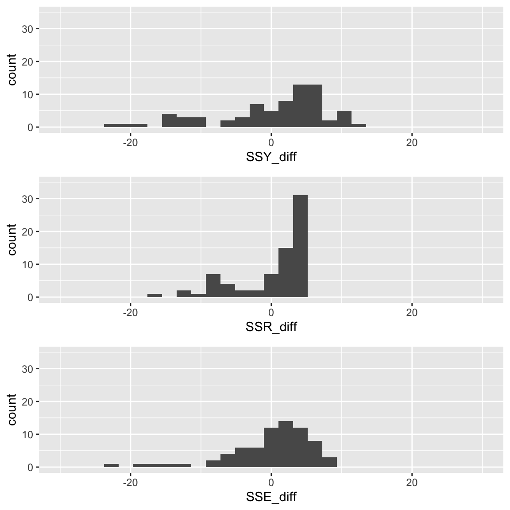
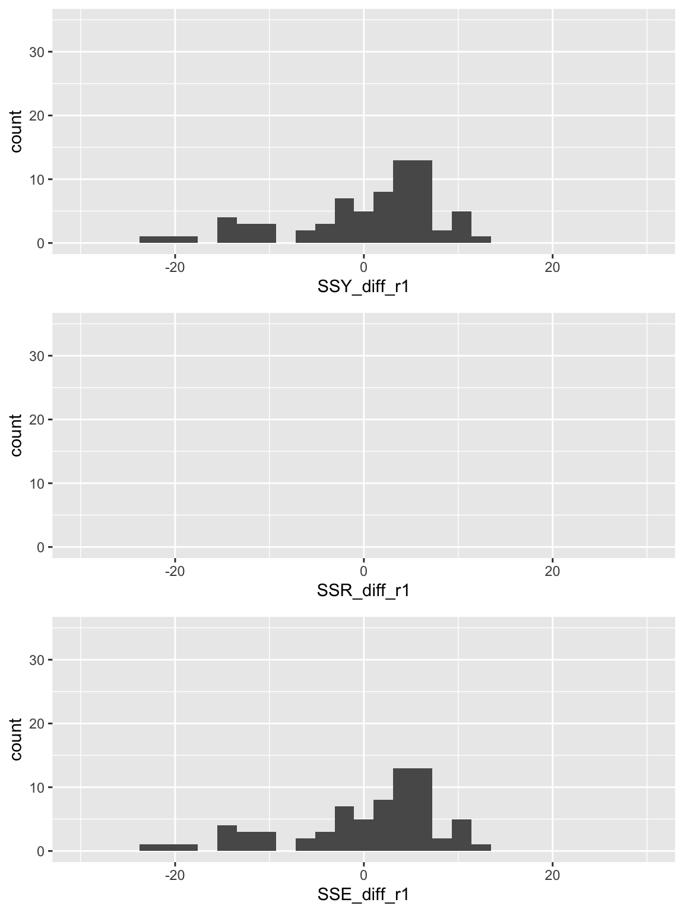
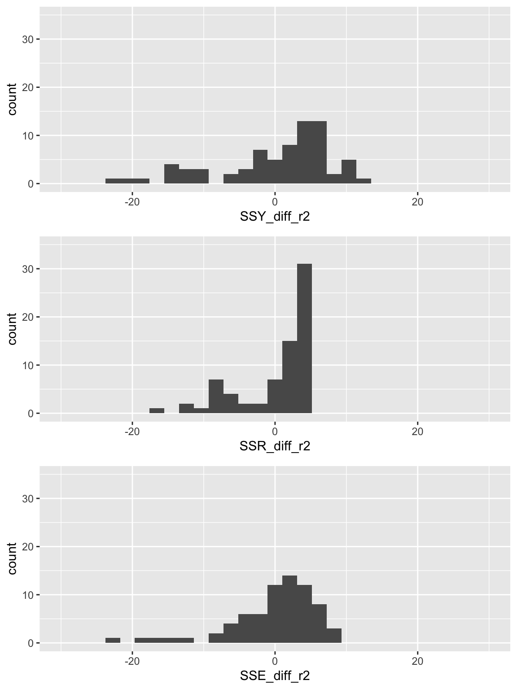
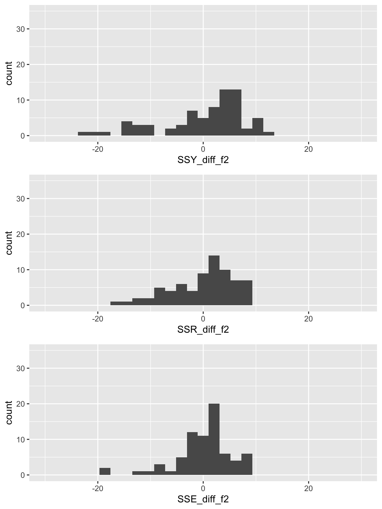
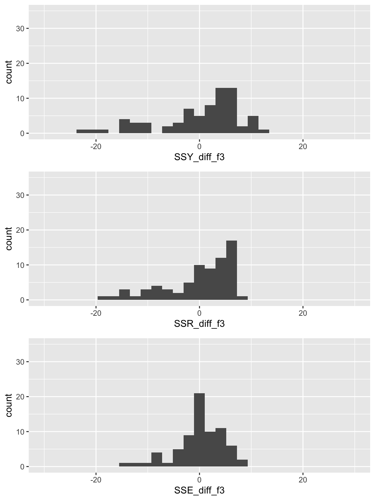

mr1 <- lm(LifeExpectancyYrs ~ FemaleLiteracyRate + FoodSupplykcPPD,
data = gapm_sub)MLR: Inference / F-test
Week 5
Learning Objectives
- Interpret MLR (population) coefficient estimates with additional variable in model
- Understand the use of the general F-test and interpret what it measures.
- Understand the context of the Overall F-test, conduct the needed hypothesis test, and interpret the results.
- Understand the context of the single covariate F-test, conduct the needed hypothesis test, and interpret the results.
- Understand the context of the group of covariates F-test, conduct the needed hypothesis test, and interpret the results.
Let’s map that to our regression analysis process


Model Selection
Building a model
Selecting variables
Prediction vs interpretation
Comparing potential models
Model Fitting
Find best fit line
Using OLS in this class
Parameter estimation
Categorical covariates
Interactions
Model Evaluation
- Evaluation of model fit
- Testing model assumptions
- Residuals
- Transformations
- Influential points
- Multicollinearity
Model Use (Inference)
- Inference for coefficients
- Hypothesis testing for coefficients
- Inference for expected \(Y\) given \(X\)
Learning Objectives
- Interpret MLR (population) coefficient estimates with additional variable in model
- Understand the use of the general F-test and interpret what it measures.
- Understand the context of the Overall F-test, conduct the needed hypothesis test, and interpret the results.
- Understand the context of the single covariate F-test, conduct the needed hypothesis test, and interpret the results.
- Understand the context of the group of covariates F-test, conduct the needed hypothesis test, and interpret the results.
Interpreting the estimated population coefficients
- For a population model: \[Y = \beta_0 + \beta_1 X_1 + \beta_2 X_2+ \epsilon\]
- Where \(X_1\) and \(X_2\) are continuous variables
- No need to specify \(Y\) because it required to be continuous in linear regression
General interpretation for \(\widehat{\beta}_0\)
The expected \(Y\)-variable is (\(\widehat\beta_0\) units) when the \(X_1\)-variable is 0 \(X_1\)-units and \(X_2\)-variable is 0 \(X_1\)-units (95% CI: LB, UB).
General interpretation for \(\widehat{\beta}_1\)
For every increase of 1 \(X_1\)-unit in the \(X_1\)-variable, adjusting/controlling for \(X_2\)-variable, there is an expected increase/decrease of \(|\widehat\beta_1|\) units in the \(Y\)-variable (95%: LB, UB).
General interpretation for \(\widehat{\beta}_2\)
For every increase of 1 \(X_2\)-unit in the \(X_2\)-variable, adjusting/controlling for \(X_1\)-variable, there is an expected increase/decrease of \(|\widehat\beta_2|\) units in the \(Y\)-variable (95%: LB, UB).
Getting these interpretations from our regression table
We fit the regression model in R and printed the regression table:
| term | estimate | std.error | statistic | p.value | conf.low | conf.high |
|---|---|---|---|---|---|---|
| (Intercept) | 33.595 | 4.472 | 7.512 | 0.000 | 24.674 | 42.517 |
| FemaleLiteracyRate | 0.157 | 0.032 | 4.873 | 0.000 | 0.093 | 0.221 |
| FoodSupplykcPPD | 0.008 | 0.002 | 4.726 | 0.000 | 0.005 | 0.012 |
Fitted multiple regression model: \(\widehat{\text{LE}} = 33.595 + 0.157 \text{ FLR} + 0.008 \text{ FS}\)
Interpretation for \(\widehat{\beta}_0\)
The expected life expectancy is 33.595 years when the female literacy rate is 0% and food supply is 0 0 kcal PPD (95% CI: 24.674, 41.517).
Interpretation for \(\widehat{\beta}_1\)
For every 1% increase in the female literacy rate, adjusting for food supply, there is an expected increase of 0.157 years in the life expectancy (95%: 0.093, 0.221).
Interpretation for \(\widehat{\beta}_2\)
For every 1 kcal PPD increase in the food supply, adjusting for female literacy rate, there is an expected increase of 0.008 years in life expectancy (95%: 0.005, 0.012).
Let’s just examine the general interpretation vs. the example
General interpretation for \(\widehat{\beta}_0\)
The expected \(Y\)-variable is (\(\widehat\beta_0\) units) when the \(X_1\)-variable is 0 \(X_1\)-units and \(X_2\)-variable is 0 \(X_1\)-units (95% CI: LB, UB).
General interpretation for \(\widehat{\beta}_1\)
For every increase of 1 \(X_1\)-unit in the \(X_1\)-variable, adjusting/controlling for \(X_2\)-variable, there is an expected increase/decrease of \(|\widehat\beta_1|\) units in the \(Y\)-variable (95%: LB, UB).
General interpretation for \(\widehat{\beta}_2\)
For every increase of 1 \(X_2\)-unit in the \(X_2\)-variable, adjusting/controlling for \(X_1\)-variable, there is an expected increase/decrease of \(|\widehat\beta_2|\) units in the \(Y\)-variable (95%: LB, UB).
Interpretation for \(\widehat{\beta}_0\)
The expected life expectancy is 33.595 years when the female literacy rate is 0% and food supply is 0 0 kcal PPD (95% CI: 24.674, 41.517).
Interpretation for \(\widehat{\beta}_1\)
For every 1% increase in the female literacy rate, adjusting for food supply, there is an expected increase of 0.157 years in the life expectancy (95%: 0.093, 0.221).
Interpretation for \(\widehat{\beta}_2\)
For every 1 kcal PPD increase in the food supply, adjusting for female literacy rate, there is an expected increase of 0.008 years in life expectancy (95%: 0.005, 0.012).
What we need in our interpretations of coefficients (reference)
Units of Y
Units of X
Discussing intercept: Mean or average or expected before Y
Discussing coefficient for continuous covariate: Mean or average or expected before difference, increase, or decrease
- OR: Mean or average or expected before Y
- Only need before difference or Y!!
Confidence interval
If other covariates in the model
Discussing intercept: Must state that variables are equal to 0
- or at their centered value if centered!
Discussing coefficient for covariate: Must state “adjusting for all other variables”, “Controlling for all other variables”, or “Holding all other variables constant”
- If only one other variable in the model, then replace “all other variables” with the single variable name
Learning Objectives
- Interpret MLR (population) coefficient estimates with additional variable in model
- Understand the use of the general F-test and interpret what it measures.
- Understand the context of the Overall F-test, conduct the needed hypothesis test, and interpret the results.
- Understand the context of the single covariate F-test, conduct the needed hypothesis test, and interpret the results.
- Understand the context of the group of covariates F-test, conduct the needed hypothesis test, and interpret the results.
We must revisit our dear friend, the F-test!

Remember from Lesson 5: F-test vs. t-test for the population slope
The square of a \(t\)-distribution with \(df = \nu\) is an \(F\)-distribution with \(df = 1, \nu\)
\[T_{\nu}^2 \sim F_{1,\nu}\]
- We can use either F-test or t-test to run the following hypothesis test:
- Note that the F-test does not support one-sided alternative tests, but the t-test does!
Remember from Lesson 5: Planting a seed about the F-test
We can think about the hypothesis test for the slope…
Null \(H_0\)
\(\beta_1=0\)
Alternative \(H_1\)
\(\beta_1\neq0\)
in a slightly different way…
Null model (\(\beta_1=0\))
- \(Y = \beta_0 + \epsilon\)
- Smaller (reduced) model
Alternative model (\(\beta_1\neq0\))
- \(Y = \beta_0 + \beta_1 X + \epsilon\)
- Larger (full) model
In multiple linear regression, we can start using this framework to test multiple coefficient parameters at once
Decide whether or not to reject the smaller reduced model in favor of the larger full model
Cannot do this with the t-test!
We can extend this!!
We can create a hypothesis test for more than one coefficient at a time…
Null \(H_0\)
\(\beta_1=\beta_2=0\)
Alternative \(H_1\)
\(\beta_1\neq0\) and/or \(\beta_2\neq0\)
in a slightly different way…
Null model
- \(Y = \beta_0 + \epsilon\)
- Smaller (reduced) model
Alternative* model
- \(Y = \beta_0 + \beta_1 X_1 + \beta_2 X_2 + \epsilon\)
- Larger (full) model
*This is not quite the alternative, but if we reject the null, then this is the model we move forward with
Poll Everywhere Question 1
Building a very important toolkit: three types of tests
Overall test
Does at least one of the covariates/predictors contribute significantly to the prediction of Y?
Test for addition of a single variable (covariate subset test)
Does the addition of one particular covariate add significantly to the prediction of Y achieved by other covariates already present in the model?
Test for addition of group of variables (covariate subset test)
Does the addition of some group of covariates add significantly to the prediction of Y achieved by other covariates already present in the model?
Variation: Explained vs. Unexplained
\[\begin{aligned} \sum_{i=1}^n (Y_i - \overline{Y})^2 &= \sum_{i=1}^n (\widehat{Y}_i- \overline{Y})^2 + \sum_{i=1}^n (Y_i - \widehat{Y}_i)^2 \\ SSY &= SSR + SSE \end{aligned}\]
- \(Y_i - \overline{Y}\) = the deviation of \(Y_i\) around the mean \(\overline{Y}\)
- (the total amount deviation unexplained at \(X_{i1},\ldots,X_{ik}\) ).
- \(\widehat{Y}_i- \overline{Y}\) = the deviation of the fitted value \(\widehat{Y}_i\) around the mean \(\overline{Y}\)
- (the amount deviation explained by the regression at \(X_{i1},\ldots,X_{ik}\) ).
- \(Y_i - \widehat{Y}_i\) = the deviation of the observation \(Y\) around the fitted regression line
- (the amount deviation unexplained by the regression at \(X_{i1},\ldots,X_{ik}\) )
Another way to think of SSY, SSR, and SSE
Let’s create a data frame of each component within the SS’s
- Difference in SSY: \(Y_i - \overline{Y}\)
- Difference in SSR: \(\widehat{Y}_i- \overline{Y}\)
- Difference in SSE: \(Y_i - \widehat{Y}_i\)
Using our simple linear regression model as an example:
slr1 = lm(LifeExpectancyYrs ~ FemaleLiteracyRate, data = gapm_sub)
aug_slr1 = augment(slr1)
SS_df = gapm_sub %>% select(LifeExpectancyYrs) %>%
mutate(SSY_diff = LifeExpectancyYrs - mean(LifeExpectancyYrs),
y_fit = aug_slr1$.fitted,
SSR_diff = y_fit - mean(LifeExpectancyYrs),
SSE_diff = aug_slr1$.resid)Plot the components of each sum of squares
SSY_plot = ggplot(SS_df, aes(SSY_diff)) + geom_histogram() + xlim(-30, 30) + ylim(0, 35)
SSR_plot = ggplot(SS_df, aes(SSR_diff)) + geom_histogram() + xlim(-30, 30) + ylim(0, 35)
SSE_plot = ggplot(SS_df, aes(SSE_diff)) + geom_histogram() + xlim(-30, 30) + ylim(0, 35)
grid.arrange(SSY_plot, SSR_plot, SSE_plot, nrow = 3)`stat_bin()` using `bins = 30`. Pick better value with `binwidth`.Warning: Removed 1 row containing missing values or values outside the scale range
(`geom_bar()`).`stat_bin()` using `bins = 30`. Pick better value with `binwidth`.Warning: Removed 1 row containing missing values or values outside the scale range
(`geom_bar()`).`stat_bin()` using `bins = 30`. Pick better value with `binwidth`.Warning: Removed 1 row containing missing values or values outside the scale range
(`geom_bar()`).
\[SSY = \sum_{i=1}^n (Y_i - \overline{Y})^2 = 64.64\]
\[SSR = \sum_{i=1}^n (\widehat{Y}_i- \overline{Y})^2 = 27.24\]
\[SSE =\sum_{i=1}^n (Y_i - \widehat{Y}_i)^2 = 37.39\]
When running a F-test for linear models…
- We need to define a larger, full model (more parameters)
- We need to define a smaller, reduced model (fewer parameters)
- Use the F-statistic to decide whether or not we reject the smaller model
- The F-statistic compares the SSE of each model to determine if the full model explains a significant amount of additional variance
\[ F = \dfrac{\frac{SSE(R) - SSE(F)}{df_R - df_F}}{\frac{SSE(F)}{df_F}} \]
- \(SSE(R) \geq SSE(F)\)
- Numerator measures difference in unexplained variation between the models
- Big difference = added parameters greatly reduce the unexplained variation (increase explained variation)
- Smaller difference = added parameters don’t reduce the unexplained variation
- Take ratio of difference to the unexplained variation in the full model
Poll Everywhere Question 2
We will keep working with the MLR model from last class
New population model for example:
\[\text{Life expectancy} = \beta_0 + \beta_1 \text{Female literacy rate} + \beta_2 \text{Food supply} + \epsilon\]
# Fit regression model:
mr1 <- lm(LifeExpectancyYrs ~ FemaleLiteracyRate + FoodSupplykcPPD,
data = gapm_sub)
tidy(mr1, conf.int=T) %>% gt() %>% tab_options(table.font.size = 35) %>% fmt_number(decimals = 3)| term | estimate | std.error | statistic | p.value | conf.low | conf.high |
|---|---|---|---|---|---|---|
| (Intercept) | 33.595 | 4.472 | 7.512 | 0.000 | 24.674 | 42.517 |
| FemaleLiteracyRate | 0.157 | 0.032 | 4.873 | 0.000 | 0.093 | 0.221 |
| FoodSupplykcPPD | 0.008 | 0.002 | 4.726 | 0.000 | 0.005 | 0.012 |
Fitted multiple regression model:
\[\begin{aligned} \widehat{\text{Life expectancy}} &= \widehat{\beta}_0 + \widehat{\beta}_1 \text{Female literacy rate} + \widehat{\beta}_2 \text{Food supply} \\ \widehat{\text{Life expectancy}} &= 33.595 + 0.157\ \text{Female literacy rate} + 0.008\ \text{Food supply} \end{aligned}\]
Learning Objectives
- Interpret MLR (population) coefficient estimates with additional variable in model
- Understand the use of the general F-test and interpret what it measures.
- Understand the context of the Overall F-test, conduct the needed hypothesis test, and interpret the results.
- Understand the context of the single covariate F-test, conduct the needed hypothesis test, and interpret the results.
- Understand the context of the group of covariates F-test, conduct the needed hypothesis test, and interpret the results.
Overall F-test
Does at least one of the covariates/predictors contribute significantly to the prediction of Y?
- For a general population MLR model, \[Y = \beta_0 + \beta_1 X_1 + \beta_2 X_2+ \ldots + \beta_k X_k + \epsilon\]
We can create a hypothesis test for all the covariate coefficients…
Null \(H_0\)
\(\beta_1=\beta_2= \ldots=\beta_k=0\)
Alternative \(H_1\)
At least one \(\beta_j\neq0\) (for \(j=1, 2, \ldots, k\))
Null / Smaller / Reduced model
\(Y = \beta_0 + \epsilon\)
Alternative / Larger / Full model
\(Y = \beta_0 + \beta_1 X_1 + \beta_2 X_2 + \ldots + \beta_k X_k + \epsilon\)
Overall F-test: general steps for hypothesis test
- Met underlying LINE assumptions
- State the null hypothesis
- Specify the significance level.
Often we use \(\alpha = 0.05\)
- Specify the test statistic and its distribution under the null
The test statistic is \(F\), and follows an F-distribution with numerator \(df=k\) and denominator \(df=n-k-1\). (\(n\) = # obversation, \(k\) = # covariates)
- Compute the value of the test statistic
The calculated test statistic is
\[F^ = \dfrac{\frac{SSE(R) - SSE(F)}{df_R - df_F}}{\frac{SSE(F)}{df_F}} = \frac{MSR_{full}}{MSE_{full}}\]
- Calculate the p-value
We are generally calculating: \(P(F_{k, n-k-1} > F)\)
- Write conclusion for hypothesis test
- Reject if: \(P(F_{k, n-k-1} > F) < \alpha\)
We (reject/fail to reject) the null hypothesis at the \(100\alpha\%\) significance level. There is (sufficient/insufficient) evidence that at least one predictor’s coefficient is not 0 (p-value = \(P(F_{1, n-2} > F)\)).
Overall F-test: a word on the conclusion
- If \(H_0\) is rejected, we conclude there is sufficient evidence that at least one predictor’s coefficient is different from zero.
- Same as: at least one independent variable contributes significantly to the prediction of \(Y\)
- If \(H_0\) is not rejected, we conclude there is insufficient evidence that at least one predictor’s coefficient is different from zero.
- Same as: Not enough evidence that at least one independent variable contributes significantly to the prediction of \(Y\)
Let’s think about our MLR example for life expectancy
Our proposed population model
\[\text{LE} = \beta_0 + \beta_1 \text{FLR} + \beta_2 \text{FS} + \epsilon\]
Fitted multiple regression model:
\[\begin{aligned} \widehat{\text{LE}} &= \widehat{\beta}_0 + \widehat{\beta}_1 \text{FLR} + \widehat{\beta}_2 \text{FS} \\ \widehat{\text{LE}} &= 33.595 + 0.157\ \text{FLR} + 0.008\ \text{FS} \end{aligned}\]
Our main question for the Overall F-test: Is the regression model containing female literacy rate and food supply useful in estimating countries’ life expectancy?
Null / Smaller / Reduced model
\(LE = \beta_0 + \epsilon\)
Alternative / Larger / Full model
\(LE = \beta_0 + \beta_1 FLR + \beta_2 FS + \epsilon\)
Comparing the SSY, SSR, and SSE for reduced and full model
mod_red1 = lm(LifeExpectancyYrs ~ 1, data = gapm_sub)
aug_red1 = augment(mod_red1)
mod_full1 = lm(LifeExpectancyYrs ~ FemaleLiteracyRate + FoodSupplykcPPD,
data = gapm_sub)
aug_full1 = augment(mod_full1)
SS_df2 = gapm_sub %>% select(LifeExpectancyYrs) %>%
mutate(SSY_diff_r1 = LifeExpectancyYrs - mean(LifeExpectancyYrs),
SSR_diff_r1 = aug_red1$.fitted - mean(LifeExpectancyYrs),
SSE_diff_r1 = aug_red1$.resid,
SSY_diff_f1 = LifeExpectancyYrs - mean(LifeExpectancyYrs),
SSR_diff_f1 = aug_full1$.fitted - mean(LifeExpectancyYrs),
SSE_diff_f1 = aug_full1$.resid)Comparing the SSY, SSR, and SSE for reduced and full model
Reduced / null model \[LE = \beta_0 + \epsilon\]
`stat_bin()` using `bins = 30`. Pick better value with `binwidth`.Warning: Removed 1 row containing missing values or values outside the scale range
(`geom_bar()`).`stat_bin()` using `bins = 30`. Pick better value with `binwidth`.Warning: Removed 2 rows containing missing values or values outside the scale range
(`geom_bar()`).`stat_bin()` using `bins = 30`. Pick better value with `binwidth`.Warning: Removed 1 row containing missing values or values outside the scale range
(`geom_bar()`).
\[SSY = 64.64\]
\[SSR = 0\]
\[SSE = 64.64\]
Full / Alternative model \[LE = \beta_0 + \beta_1 FLR + \beta_2 FS + \epsilon\]
`stat_bin()` using `bins = 30`. Pick better value with `binwidth`.Warning: Removed 1 row containing missing values or values outside the scale range
(`geom_bar()`).`stat_bin()` using `bins = 30`. Pick better value with `binwidth`.Warning: Removed 1 row containing missing values or values outside the scale range
(`geom_bar()`).`stat_bin()` using `bins = 30`. Pick better value with `binwidth`.Warning: Removed 1 row containing missing values or values outside the scale range
(`geom_bar()`).\[SSY = 64.64\]
\[SSR = 36.39\]
\[SSE = 28.25\]
Poll Everywhere Question 3
So let’s step through our hypothesis test (1/3)
- Met underlying LINE assumptions
- State the null hypothesis
- Specify the significance level
Often we use \(\alpha = 0.05\)
- Specify the test statistic and its distribution under the null
The test statistic is \(F\), and follows an F-distribution with numerator \(df=k =2\) and denominator \(df=n-k-1 = 72 - 2-1=69\). (\(n\) = # obversation, \(k\) = # covariates)
So let’s step through our hypothesis test (2/3)
- Compute the value of the test statistic / 6. Calculate the p-value
The calculated test statistic is
\[F^ = \dfrac{\frac{SSE(R) - SSE(F)}{df_R - df_F}}{\frac{SSE(F)}{df_F}}=44.443\] OR use ANOVA table:
anova(mod_red1, mod_full1) %>% tidy() %>% gt() %>% tab_options(table.font.size = 35) %>% fmt_number(decimals = 3)| term | df.residual | rss | df | sumsq | statistic | p.value |
|---|---|---|---|---|---|---|
| LifeExpectancyYrs ~ 1 | 71.000 | 4,589.119 | NA | NA | NA | NA |
| LifeExpectancyYrs ~ FemaleLiteracyRate + FoodSupplykcPPD | 69.000 | 2,005.556 | 2.000 | 2,583.563 | 44.443 | 0.000 |
So let’s step through our hypothesis test (3/3)
- Write conclusion for hypothesis test
We reject the null hypothesis at the 5% significance level. There is sufficient evidence that either countries’ female literacy rate or the food supply (or both) contributes significantly to the prediction of life expectancy (p-value < 0.001).
Learning Objectives
- Interpret MLR (population) coefficient estimates with additional variable in model
- Understand the use of the general F-test and interpret what it measures.
- Understand the context of the Overall F-test, conduct the needed hypothesis test, and interpret the results.
- Understand the context of the single covariate F-test, conduct the needed hypothesis test, and interpret the results.
- Understand the context of the group of covariates F-test, conduct the needed hypothesis test, and interpret the results.
Covariate subset test: Single variable
Does the addition of one particular covariate of interest add significantly to the prediction of Y achieved by other covariates already present in the model?
- For a general population MLR model, \[Y = \beta_0 + \beta_1 X_1 + \beta_2 X_2+ \beta_j X_j +\ldots + \beta_k X_k + \epsilon\]
We can create a hypothesis test for a single \(j\) covariate coefficient (where \(j\) can be any value \(1, 2, \ldots, k\))…
Null \(H_0\)
\(\beta_j=0\)
Alternative \(H_1\)
\(\beta_j\neq0\)
Null / Smaller / Reduced model
\(Y = \beta_0 + \beta_1 X_1 + \beta_2 X_2 + \ldots + \beta_k X_k + \epsilon\)
Alternative / Larger / Full model
\(\begin{aligned}Y = &\beta_0 + \beta_1 X_1 + \beta_2 X_2 + \beta_j X_j +\\ &\ldots + \beta_k X_k + \epsilon \end{aligned}\)
Single covariate F-test: general steps for hypothesis test (reference)
- Met underlying LINE assumptions
- State the null hypothesis
- Specify the significance level
Often we use \(\alpha = 0.05\)
- Specify the test statistic and its distribution under the null
The test statistic is \(F\), and follows an F-distribution with numerator \(df=k\) and denominator \(df=n-k-1\). (\(n\) = # obversation, \(k\) = # covariates)
- Compute the value of the test statistic
The calculated test statistic is
\[F^ = \dfrac{\frac{SSE(R) - SSE(F)}{df_R - df_F}}{\frac{SSE(F)}{df_F}}\]
- Calculate the p-value
We are generally calculating: \(P(F_{k, n-k-1} > F)\)
- Write conclusion for hypothesis test
We (reject/fail to reject) the null hypothesis at the \(100\alpha\%\) significance level. There is (sufficient/insufficient) evidence that predictor/covariate \(j\) significantly improves the prediction of Y, given all the other covariates are in the model (p-value = \(P(F_{1, n-2} > F)\)).
Let’s think about our MLR example for life expectancy
Our proposed population model
\[\text{LE} = \beta_0 + \beta_1 \text{FLR} + \beta_2 \text{FS} + \epsilon\]
Fitted multiple regression model:
\[\begin{aligned} \widehat{\text{LE}} &= \widehat{\beta}_0 + \widehat{\beta}_1 \text{FLR} + \widehat{\beta}_2 \text{FS} \\ \widehat{\text{LE}} &= 33.595 + 0.157\ \text{FLR} + 0.008\ \text{FS} \end{aligned}\]
Our main question for the single covariate subset F-test: Is the regression model containing food supply improve the estimation of countries’ life expectancy, given female literacy rate is already in the model?
Null / Smaller / Reduced model
\(LE = \beta_0 + \beta_1 FLR + \epsilon\)
Alternative / Larger / Full model
\(LE = \beta_0 + \beta_1 FLR + \beta_2 FS + \epsilon\)
Comparing the SSY, SSR, and SSE for reduced and full model
Reduced / null model \[LE = \beta_0 + \beta_1 FLR + \epsilon\]
`stat_bin()` using `bins = 30`. Pick better value with `binwidth`.Warning: Removed 1 row containing missing values or values outside the scale range
(`geom_bar()`).`stat_bin()` using `bins = 30`. Pick better value with `binwidth`.Warning: Removed 1 row containing missing values or values outside the scale range
(`geom_bar()`).`stat_bin()` using `bins = 30`. Pick better value with `binwidth`.Warning: Removed 1 row containing missing values or values outside the scale range
(`geom_bar()`).
\[SSY = 64.64\]
\[SSR = 27.24\]
\[SSE = 37.39\]
Full / Alternative model \[LE = \beta_0 + \beta_1 FLR + \beta_2 FS + \epsilon\]
`stat_bin()` using `bins = 30`. Pick better value with `binwidth`.Warning: Removed 1 row containing missing values or values outside the scale range
(`geom_bar()`).`stat_bin()` using `bins = 30`. Pick better value with `binwidth`.Warning: Removed 1 row containing missing values or values outside the scale range
(`geom_bar()`).`stat_bin()` using `bins = 30`. Pick better value with `binwidth`.Warning: Removed 1 row containing missing values or values outside the scale range
(`geom_bar()`).
\[SSY = 64.64\]
\[SSR = 36.39\]
\[SSE = 28.25\]
Poll Everywhere Question 4
So let’s step through our hypothesis test (1/3)
- Met underlying LINE assumptions
- State the null hypothesis
- Specify the significance level
Often we use \(\alpha = 0.05\)
- Specify the test statistic and its distribution under the null
The test statistic is \(F\), and follows an F-distribution with numerator \(df=k =2\) and denominator \(df=n-k-1 = 72 - 2-1=69\). (\(n\) = # obversation, \(k\) = # covariates)
So let’s step through our hypothesis test (2/3)
- Compute the value of the test statistic / 6. Calculate the p-value
The calculated test statistic is
\[F^ = \dfrac{\frac{SSE(R) - SSE(F)}{df_R - df_F}}{\frac{SSE(F)}{df_F}}\] ANOVA table:
anova(mod_red2, mod_full2) %>% tidy() %>% gt() %>% tab_options(table.font.size = 35) %>% fmt_number(decimals = 3)| term | df.residual | rss | df | sumsq | statistic | p.value |
|---|---|---|---|---|---|---|
| LifeExpectancyYrs ~ FemaleLiteracyRate | 70.000 | 2,654.875 | NA | NA | NA | NA |
| LifeExpectancyYrs ~ FemaleLiteracyRate + FoodSupplykcPPD | 69.000 | 2,005.556 | 1.000 | 649.319 | 22.339 | 0.000 |
So let’s step through our hypothesis test (3/3)
- Write conclusion for hypothesis test
We reject the null hypothesis at the 5% significance level. There is sufficient evidence that countries’ food supply contributes significantly to the prediction of life expectancy, given that female literacy rate is already in the model (p-value < 0.001).
Learning Objectives
- Interpret MLR (population) coefficient estimates with additional variable in model
- Understand the use of the general F-test and interpret what it measures.
- Understand the context of the Overall F-test, conduct the needed hypothesis test, and interpret the results.
- Understand the context of the single covariate F-test, conduct the needed hypothesis test, and interpret the results.
- Understand the context of the group of covariates F-test, conduct the needed hypothesis test, and interpret the results.
Covariate subset test: group of variables
Does the addition of some group of covariates of interest add significantly to the prediction of Y obtained through other independent variables already present in the model?
- For a general population MLR model, \[Y = \beta_0 + \beta_1 X_1 + \beta_2 X_2+ \ldots + \beta_k X_k + \epsilon\]
We can create a hypothesis test for a group of covariate coefficients (subset of many)… For example…
Null \(H_0\)
\(\beta_1=\beta_3 =0\) (this can be any coefficients)
Alternative \(H_1\)
At least one \(\beta_j\neq0\) (for \(j=2,3\))
Null / Smaller / Reduced model
\(Y = \beta_0 + \beta_2 X_2 + \epsilon\)
Alternative / Larger / Full model
\(Y = \beta_0 + \beta_1 X + \beta_2 X + \beta_3 X_3+\epsilon\)
Covariate subset F-test: general steps for hypothesis test (reference)
- Met underlying LINE assumptions
- State the null hypothesis
For example:
\[\begin{align} H_0 &: \beta_1 = \beta_3 = 0\\ \text{vs. } H_A&: \text{At least one } \beta_j\neq0, \text{for }j=1,3 \end{align}\]- Specify the significance level
Often we use \(\alpha = 0.05\)
- Specify the test statistic and its distribution under the null
The test statistic is \(F\), and follows an F-distribution with numerator \(df=k\) and denominator \(df=n-k-1\). (\(n\) = # obversation, \(k\) = # covariates)
- Compute the value of the test statistic
The calculated test statistic is
\[F^ = \dfrac{\frac{SSE(R) - SSE(F)}{df_R - df_F}}{\frac{SSE(F)}{df_F}}\]
- Calculate the p-value
We are generally calculating: \(P(F_{k, n-k-1} > F)\)
- Write conclusion for hypothesis test
We (reject/fail to reject) the null hypothesis at the \(100\alpha\%\) significance level. There is (sufficient/insufficient) evidence that predictors/covariates \(2,3\) significantly improve the prediction of Y, given all the other covariates are in the model (p-value = \(P(F_{1, n-2} > F)\)).
We need to slightly alter our MLR example for life expectancy
Our proposed population model to include water source percent (WS):
\[\text{LE} = \beta_0 + \beta_1 \text{FLR} + \beta_2 \text{FS} + \beta_3 WS + \epsilon\]
- We don’t have a fitted multiple regression model for this yet!
Our main question for the group covariate subset F-test: Is the regression model containing food supply and water source percent improve the estimation of countries’ life expectancy, given percent female literacy rate is already in the model?
Null / Smaller / Reduced model
\(LE = \beta_0 + \beta_1 FLR + \epsilon\)
Alternative / Larger / Full model
\(LE = \beta_0 + \beta_1 FLR + \beta_2 FS + \beta_3 WS + \epsilon\)
Comparing the SSY, SSR, and SSE for reduced and full model
Reduced / null model \[LE = \beta_0 + \beta_1 FLR + \epsilon\]
`stat_bin()` using `bins = 30`. Pick better value with `binwidth`.Warning: Removed 1 row containing missing values or values outside the scale range
(`geom_bar()`).`stat_bin()` using `bins = 30`. Pick better value with `binwidth`.Warning: Removed 1 row containing missing values or values outside the scale range
(`geom_bar()`).`stat_bin()` using `bins = 30`. Pick better value with `binwidth`.Warning: Removed 1 row containing missing values or values outside the scale range
(`geom_bar()`).\[SSY = 64.64\]
\[SSR = 27.24\]
\[SSE = 37.39\]
Full / Alternative model \[LE = \beta_0 + \beta_1 FLR + \beta_2 FS + \beta_3 WS + \epsilon\]
`stat_bin()` using `bins = 30`. Pick better value with `binwidth`.Warning: Removed 1 row containing missing values or values outside the scale range
(`geom_bar()`).`stat_bin()` using `bins = 30`. Pick better value with `binwidth`.Warning: Removed 1 row containing missing values or values outside the scale range
(`geom_bar()`).`stat_bin()` using `bins = 30`. Pick better value with `binwidth`.Warning: Removed 1 row containing missing values or values outside the scale range
(`geom_bar()`).
\[SSY = 64.64\]
\[SSR = 43.26\]
\[SSE = 21.38\]
So let’s step through our hypothesis test (1/3)
- Met underlying LINE assumptions
- State the null hypothesis
- Specify the significance level
Often we use \(\alpha = 0.05\)
- Specify the test statistic and its distribution under the null
The test statistic is \(F\), and follows an F-distribution with numerator \(df=k =2\) and denominator \(df=n-k-1 = 72 - 2-1=69\). (\(n\) = # obversation, \(k\) = # covariates)
So let’s step through our hypothesis test (2/3)
- Compute the value of the test statistic / 6. Calculate the p-value
The calculated test statistic is
\[F^ = \dfrac{\frac{SSE(R) - SSE(F)}{df_R - df_F}}{\frac{SSE(F)}{df_F}}\] ANOVA table:
anova(mod_red3, mod_full3) %>% tidy() %>% gt() %>% tab_options(table.font.size = 35) %>% fmt_number(decimals = 3)| term | df.residual | rss | df | sumsq | statistic | p.value |
|---|---|---|---|---|---|---|
| LifeExpectancyYrs ~ FemaleLiteracyRate | 70.000 | 2,654.875 | NA | NA | NA | NA |
| LifeExpectancyYrs ~ FemaleLiteracyRate + FoodSupplykcPPD + WaterSourcePrct | 68.000 | 1,517.916 | 2.000 | 1,136.959 | 25.467 | 0.000 |
So let’s step through our hypothesis test (3/3)
- Write conclusion for hypothesis test
We reject the null hypothesis at the 5% significance level. There is sufficient evidence that countries’ food supply or water source (or both) contribute significantly to the prediction of life expectancy, given that female literacy rate is already in the model (p-value < 0.001).
Other ways to word the hypothesis tests (reference)
Single covariate subset F-test
- \(H_0:\) \(X^*\) does not significantly improve the prediction of \(Y\), given that \(X_1, X_2, \ldots, X_p\) are already in the model
- \(H_A:\) \(X^*\) significantly improves the prediction of \(Y\), given that \(X_1, X_2, \ldots, X_p\) are already in the model
Group covariate subset F-test
- \(H_0:\) The addition of the \(s\) variables \(X_1^*, X_2^*, \ldots, X_s^*\) does not significantly improve the prediction of \(Y\), given that \(X_1, X_2, \ldots, X_q\) are already in the model
- \(H_A:\) The addition of the \(s\) variables \(X_1^*, X_2^*, \ldots, X_s^*\) significantly improves the prediction of \(Y\), given that \(X_1, X_2, \ldots, X_q\) are already in the model